|
Monte Carlo Methods in Parallel Computing
Chuanyi Ding ding@ahpcc.unm.edu
Eric Haskin haskin@unm.edu
Outline
What is Monte Carlo?
- A powerful method that can be applied to otherwise intractable problems
- A game of chance devised so that the outcome from a large number of
plays is the value of the quantity sought
- On computers random number generators let us play the game
- The game of chance can be a direct analog of the process being studied
or artificial
- Different games can often be devised to solve the same problem
- The art of Monte Carlo is in devising a suitably efficient game.
Different Monte Carlo Applications
| Radiation transport |
Operations research |
| Nuclear criticality |
Design of nuclear reactors |
| Design of nuclear weapons |
Statistical physics |
| Phase transitions |
Wetting and growth of thin films |
| Atomic wave functions and eigenvalues
Thermodynamic properties |
Intranuclear cascade reactions |
| Long chain coiling polymers |
Reaction kinetics |
| Partial differential equations |
Large sets of linear equations |
| Numerical integration |
Uncertainty analysis |
| Development of statistical tests |
Cell population studies |
| Combinatorial problems |
Search and optimization |
| Signal detection |
WarGames |
Probability Theory
- Probability Density Function

- Expection Value (Mean)
Variance and Standard Deviation
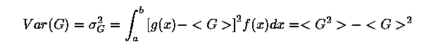
- Sampling a Cumulative Distribution Function
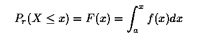
Fundamental Theorem
- Sample Mean, a Monte Carlo estimator of the expection value
- Fundamental theorem of Monte Carlo
Statistical Error in MC Estimator
- Variance and Standard Deviation of Estimator
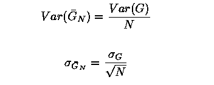
- Central Limit Theorem
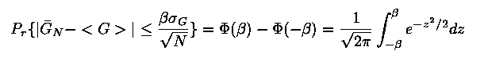
Example 1 - Monte Carlo Integration
to Estimate Pi
- A simple example to illustrate Monte Carlo principals
- Accelerate convergence using variance reduction techniques
- Use if expectation values
- Importance sampling
- Adapt to a parallel environment
Monte Carlo Estimate of Pi
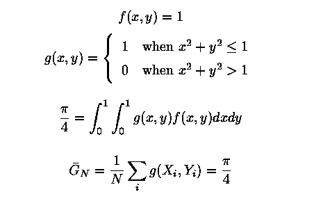
When to Consider Monte Carlo Integration
- Time required for Monte Carlo Integration to a standard error epsilon
- Time required for numerical integration in n dimensions with
trunction error of order h to the power k. (Note: k
for Simpson's 1/3 rule is 4)
- Rule of Thumb
Serial Monte Carlo Algorithm for Pi
Read N
Set SumG = 0.0
Do While i < N
Pick two random numbers xi and yi
If (xi*xi + yi*yi £ 1) then
SumG = SumG + 1
Endif
Enddo
Gbar = SumG / N
SigGbar = Sqrt(Gbar - Gbar2)
Print N, Gbar, SigGbar
Parallelization of Monte Carlo Integration
- If message passing time is negligible
- For same run time, error decreases by factor of Sqrt(p)
- For same accuracy, run time improves by a factor of p
- Should use same random number generator on each node (easy for homogeneous
architecture)
Monte Carlo Estimates of Pi
Number of Batch CPU Standard True
Processors Size Time(sec) Deviation Error
--------------------------------------------------------
1 100,000 0.625 0.005 0.0018
2 50,000 0.25 0.005 0.0037
4 25,000 0.81 0.005 0.0061
--------------------------------------------------------
- To try this problem, run MCPI by : % cd % cp -r /usr/local/mc
. % cd mc/mcpi % run
- Parallel MC Estimate of Pi, mcpi.C
1. Creating the random number generators for
( int i=0; i < num_dimension; i++)
{
// create r.n. generator
// the seeds are different for the processors seed = (myRank + 1) *
100 + i * 10 + 1;
if ( seed == 0 ) rand[i] = new RandomStream(RANDOMIZE);
else rand[i] = new RandomStream( seed );
}
2. Each processors will run num_random / numProcs random walks
for ( i=myRank; i < num_random; i+=numProcs )
{
// N random walks
2a. Generating random numbers
for ( int i1=0; i1 < num_dimension; i1++)
{
ran[i1] = rand[i1]- > next();
}
2b. Calculating for integration
if ( inBoundary
( ran, num_dimension )
)
{
myPi += f( ran, num_dimension ) * pdf( ran, num_dimension );
count++;
}
}
3. Calculating Pi from each processor myPi = 4 * myPi / num_random;
MPI_Reduce
(&myPi, &pi, 1, MPI_DOUBLE, MPI_SUM, 0, MPI_COMM_WORLD);
4. Output the results and standard deviation, sigma if (myRank == 0)
{
cout << "pi is = " << pi << " sigma = " << 4
* sqrt
( (pi/4 - (pi/4)*(pi/4))/ num_random) << " Error = " <<
abs(pi - PI25DT) << endl;
}
Variance Reduction by Use of Expectation Values
- For original sampling
- Carry out integrations from 0 to 1/Sqrt(2) analytically
- Sample from 1/Sqrt(2) to 1
- Variance = 0.0368
- Speedup by (0.168/0.0368) > 4.5 for same accuracy.
- Carry out integration over one coordinate analytically.
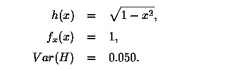
Variance Reduction by Important Sampling
- Say
- Can use a different pdf

- Greatest reduction in variance when
A Product h(x)f(x) and a possible f~(x)
Using Qualitative Information
- Smaller values of x contribute more to integral
- Indicated change in pdf reduces variance
- Speedup > 5
Omniscience Yields Zero Variance
- Choose lambda by requiring integral to be one let then

- For h(x) = Sqrt(1-x**2), the variance is reduced to zero.
- Boils down to finding a simple function that approximates that to
be integrated.
Example 2 - Solving a Partial Differential
Equation by Monte Carlo
- Poisson's equation
- Geometry
- Source:
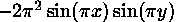
- Boundary condition: u(x,y) = 0 on boundary
Poisson's Equation As a Fixed Random Walk Model
- Using a finite difference approximation,
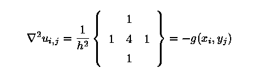
- Solving
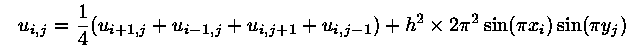
Fixed Random Walk Solution Algorithm
- From point (i,j), start a random walk. Probability of moving to each
of the adjacent nodes is 1/4.
- Generate a random number to determine which way to move
- Add g(x,y) at the new position
- Repeat this until a boundary is reached
- After N random walks, the estimate of u at (i,j) is
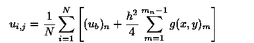
Parallel Strategies for Fixed Random Walk
- When solving at all grid points
- Start from boundary
- Outside to inside
- Row by row
- Boundary updating depends on relative message passing time
- Update only within each processor (poisson4.C)
- Update globally when any processor finishes a point (poisson5.C)
- May help to decompose problem (poisson.C)
- When solving at only a few point(s) may want to split walks for point
between processors
Results for Fixed Random Walk in Solid Slab
Number of Walks/ CPU Standard
Processors Point Time u(20,20) Deviation
-----------------------------------------------------
1 1000 400 0.0483 0.00016
2a 1000 270 0.0480 0.00020
4a 1000 165 0.0485 0.00020
=====================================================
2b 1000 313 0.0477 0.00020
4b 1000 234 0.0480 0.00029
----------------------------------------------------
a - Update all processors at same time
b - Only update within individual processor
- To apply Monte Carlo to a 1x1 slab with a 0.5x0.5 center hole, run
poisson4.C
and poisson5.C
by : % cd % cd mc/poisson4 % run
- The Structure of poisson.C
1. // Set boundary condition boundary(nx, ny);
2. Divide the initial region into 4 sub-region if necessary
2.a Evaluate the virtual parallel inner boundary line 2.b Evaluate the
virtual vertical inner boundary line 2.c Initialize boundary for each
sub-region
3. // Calculate u for (ix,iy) of each region while(1)
{
3.a // Calculate u[ix][iy] for a point (ix,iy),
and send it to others sendU
( rand, ix, iy, delta );
3.b // Receives u[iix][iiy] from the other processors for ( int i =
0; i < numProcs; i++)
{
if (i != myRank)
{
MPI_Recv(&uRec, 1, MPI_DOUBLE, i, 99, MPI_COMM_WORLD,&status);
if (uRec <= -1000) flag = 1;
else
{
ixp = ix + (i - myRank);
// the index of inner boundary, iyp = iy;
// u at this cell received from
// another processor
if ( ixp > (nx2[iRegion] - 1) )
{
ixp = nx1[iRegion] + (ixp - nx2[iRegion]) + 1;
iyp = iy + 1;
}
3.c // Set this point as a boundary u[ixp][iyp] = uRec;
onBoundary[ixp][iyp] = 1;
}
}
3.d // Set ix, iy of next node for the processor ix += numProcs;
if ( ix > (nx2[iRegion] - 1) )
{
ix = nx1[iRegion] + (ix - nx2[iRegion]) + 1; iy++;
}
assert( ((ix < nx) && (iy < ny)),
" out of given domain");
}
Floating Random Walk Solution Algorithm (point.C)
- The potential at the center of a circle of radius r, which lies entirely
within the region is
- Start a walk at point (i,j).
- Construct a circle centered at point (i,j) with radius equal to the
shortest distance to a boundary.
- Select an angle from the x-direction randomly between 0 and 2 Pi.
- Follow this direction to a new location on the circle
- When the new position is within epsilon of a boundary add the boundary
potential and begin a new walk.
Sample Results for Floating Random Walk in Solid Slab
Number of CPU Time CPU Time
Processors 1000 Walks 100,000 walks
------------------------------------------
1 0.44 3.06
2 0.5 2.5
4 0.5 1.4
------------------------------------------
- To try the floating random walk method, run the code point.C by :
% cd % cd mc/point % run
- The structure of point.C
1. // Set boundary condition
2. // Set the points which are evaluated.
for (int i=0; i < numPoint; i++)
{
x[i] = (i + 1.) / ( numPoint + 1. );
y[i] = (i + 1.) / ( numPoint + 1. );
}
3. Evaluate each point
for ( i=0; i < numPoint; i++ )
{ ... ...
3.a All processors run for one same point
for ( int ir=myRank;
ir < num_random;
ir+=numProcs )
{
// initilaizing the position of the point for each random walk xx =
x[i]; yy = y[i];
while (1)
{
// calculating the minimum distance of selected point // to the boundary
minDist = MinDist(xx, yy, side);
if ( minDist < acceptDist ) break;
// each processor generates a random number, and make a random
// move, the point moves randomly to any point at the circle
// with a radius of minDist, and centered at (xx, yy) double ran = rand->next();
xx += minDist * sin(2*pi*ran);
yy += minDist * cos(2*pi*ran);
}
// sum tempU = EvalPoint( xx, yy, side );
myU += tempU; mysqU += tempU * tempU;
}
// end of a random walk myU /= num_random;
mysqU /= num_random;
3.b // Sum the results from all processors MPI_Reduce(&myU, &u,
1, MPI_DOUBLE, MPI_SUM, 0, MPI_COMM_WORLD);
MPI_Reduce(&mysqU, &sqU, 1, MPI_DOUBLE, MPI_SUM, 0, MPI_COMM_WORLD);
3.c // print out if ( myRank == 0 ) cout << "At the point of "
<< x[0] << ", " << y[0] << " , u is = " <<
u << " , sigma = " << sqrt( (sqU - u*u) / num_random);
Example 3 - Monte Carlo Estimate of Thermodynamic
Properties
- Consider a system of atoms with a finite number of configurations.
- Let En denote energy of the n-th configuration
- The probability that the system is in the n-th configuration is
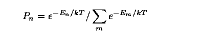
- The expectation value of observable property A is
Why not determine such expectation values exactly?
- Consider a 10x10x10 cubic crystal of atoms in which each atom has
only two possible states.
Number of Possible Configurations = 2**1000
- Summing at a rate of one million configurations per second,
Time Required for Exact Calculation = 10**288 years
- In contrast, to achieve 1% accuracy, using the Monte Carlo method,
about 10,000 terms must be summed.
Metropolis Algorithm
- Follows a sequence of configurations
- Pn(C) is probability of the n-th observation in configuration C
- T(C->C') is probability of making a transition from state C to
state C'
- Probability of remaining in state C is
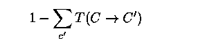
- Master equation for this Markov process is
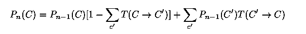
- Rearranging master equation
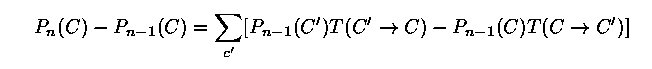
- In steady state, transition probability must be independent of time
and
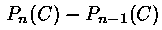 must goto zero; that is Pn(C) must be the steady state
function P(C) and P(C)T(C->C') = P(C')T(C'->C)
- Since P(C) is proportional to Exp(-Ec/kT), this means

- What transition probability will give the correct probability function
P(C)?
- The answer is not unique
- All we need is a function T(C->C') that satisfies the detailed
balance P(C)T(C->C') = P(C')T(C'->C)
- One transition function that is often used is:
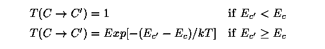
Example 3 - 2D Ising Model
- Simplify to a square lattice of N=LxL atoms. Each atom has only a
spin degree of freedom,
spin = +1 (up),
spin = -1 (down)
- The energy of the n-th given configuration is
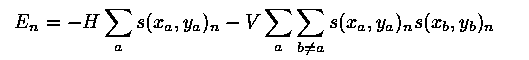
- For a given temperature T, the specific heat C and magnetic x susceptibility
per site can be estimated as

2D Ising Metropolis Algorithm
- Let n = 0, and start with an arbitrary configuration, for example,
all spins up.
- Pick two random integers x and y between 1 and L. Let DelE be the
change in energy caused by changing the value of the spin at (x,y).
- Increase n by 1. If DelE < 0, accept the change. If DelE > 0
accept the new configuration with probability Exp(-DelE/kT). Go to step
2.
2D Ising - Metropolis Algorithm (Cont.)
- The Metropolis algorithm produces a series of configurations that
eventually approaches a sampling sequence for the discrete probability
function
- It is difficult to predict how long it will take for the Metropolis
algorithm to reach this asymptotic state.
- This is usually determined empirically by seeing whether the average
over a large number of configurations converges.
- Note: The algorithm requires DelE not E be calculated for each trial
change. DelE is generally much easier to calculate.
Example 3 - Monte Carlo Estimates of Thermodynamic Properties
- Estimate heat capacity and magnetic susceptibility as functions of
temperature.
- Have each processor handle a separate temperature calculation.
- INSERT PARALLEL FLOW FIGURE HERE
Results for 2D Ising Problem
- INSERT RESULTS FIGURE HERE
- To run this problem, use the code ising.C by : % cd % cd mc/ising
% run
- The structure of ising.C
1. // Set the parameters and initialize initialize( l, h, v
);
2. // Each processor evaluates the properties of system at a temperature
for (int i=myRank;
i < num_runs; i += numProcs)
{
double tau = tauMin + i * delTau;
2.a // Make the atoms of system random distributed
for (int j=0;
j < 100*l*l; j++ )
{
ran1 = rand1->next();
ran2 = rand2->next();
makeMove( l, h, v, ran1, ran2, tau );
}
2.b // Go to random walks, and add the energy of each state
for ( int i1=0; i1 < num_random; i1++ )
{
ran1 = rand1->next();
ran2 = rand2->next();
makeMove( l, h, v, ran1, ran2, tau );
sumM += abs(m);
sumM2 += m * m;
sumE += e; sumE2 += e * e;
}
2.c Calculate the thermal properties double aveM = sumM / num_random;
double aveM2 = sumM2 / num_random;
double aveE = sumE / num_random;
double aveE2 = sumE2 / num_random;
double delSqM = aveM2 - aveM * aveM;
double delSqE = aveE2 - aveE * aveE;
aveM /= l * l;
aveE /= l * l;
double temp = tau * tau * l * l;
double chi = delSqM / temp; double specHeat = delSqE / temp;
General Observations Regarding Parallel
Monte Carlo
- Applicability of Parallel Monte Carlo
- Most serial Monte Carlo codes are readily adaptable to a parallel
environment
- Strengths are still for
- Multi-dimensional problems
- Complex geometries
- Variance reduction techniques must still be tailored to the specific
problem (possible exception - stratified sampling for numerical
integration) inherently serial must be modified for effective parallelization
- Care must be taken to assure reproducible results
- Pseudorandom Number Generation on Parallel Computers
- Fast RNGs with long periods required
- Congruential
- xnew = (a xold + c) mod m,
- fast, typically repeats after a few billion numbers
- Marsaglia
- Faster, a million numbers per second on a laptop
- period of 2**1492 for 32 bit numbers
- Reproducibility highly desirable
- Must assure calculations on different processors are independent
- Lehmer Tree
- Amdahl's Law
- T1 = task execution time for a single processor
- Tm = execution time for the multiprocessing portion
- To = execution time of the sequential and communications portion
(overhead)
- For many Monte Carlo applications Tm is approximately T1/P where
P is the number of processors
- Efficiency = Speedup/P = 1/(1+F)
- F = P*To/T1 is the overhead factor.
- Efficiency versus Number of Processors
- Overhead Time
- Initialization time
- Message passing time
- Tends to increase nonlinearly with P
- Tends to increase with size of problem (information passed)
- Sleep time
- Processor to processor variations resulting from randomness
- Can't aggregate results until all processors done
- Load balancing required in heterogeneous systems
Copyright 1997, High Performance Computing Education
and Research Center
December 1997 editor@ahpcc.unm.edu
|